Trabalha o dia todo sentado
E sente o corpo travado pedindo movimento. A aula devolve mobilidade e descompressão da coluna para uma postura mais confortável e com menos dor no dia a dia.
Aqui você não pratica no modo automático. Cada aula é ajustada ao seu corpo, para você se movimentar com mais segurança, conforto e liberdade.
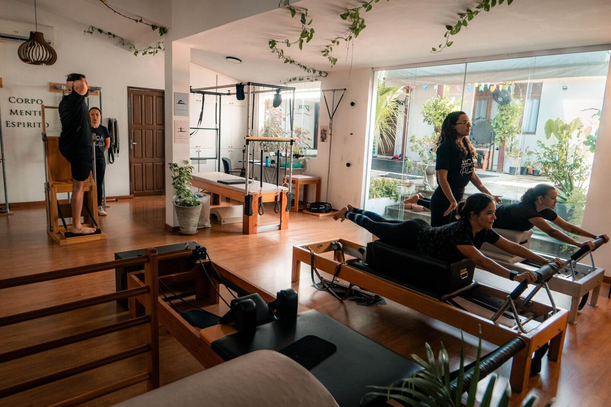
Angá
1.Surpresa boa. Aquele “que bom!” que a gente sente quando algo nos faz bem.
Foi assim que pensamos o Angá: um espaço onde você cuida do corpo e da mente com calma, atenção e método. Com o cuidado de quem recebe um amigo em casa.
E sente o corpo travado pedindo movimento. A aula devolve mobilidade e descompressão da coluna para uma postura mais confortável e com menos dor no dia a dia.
E não sabe por onde. Você começa do ponto em que o seu corpo está hoje, com segurança e direcionamento.
E sabe que a melhor forma de chegar lá é começar a cuidar disso agora, com força, equilíbrio e mobilidade.
E quer evoluir dentro do método. O repertório clássico tem progressão de verdade, do básico ao avançado.
Turmas exclusivas para gestantes, com até 3 alunas e uma fisioterapeuta ao lado durante toda a gestação.
Quem chega aqui quer cuidar do corpo e da mente com atenção de verdade, seja para começar, para voltar a se movimentar ou para ir além.
Profissionais excelentes, atentos à capacidade e à necessidade de cada um.
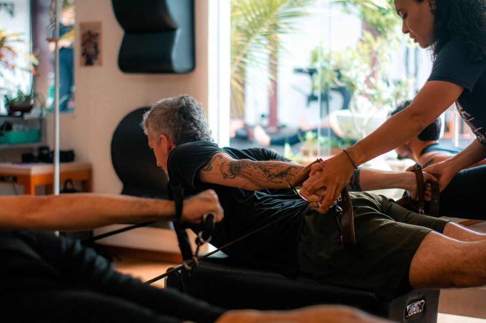
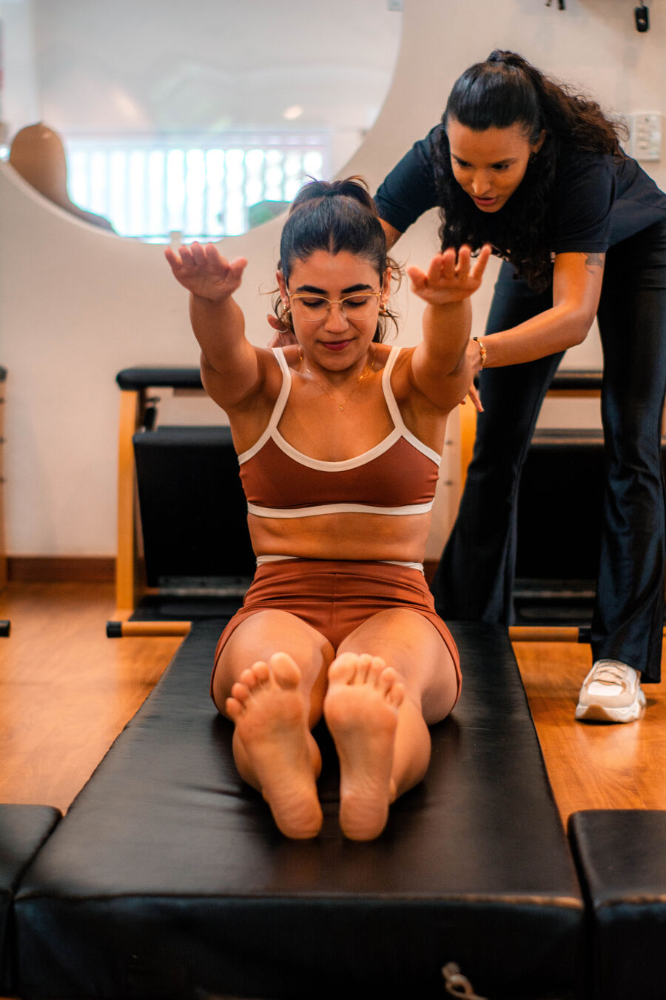
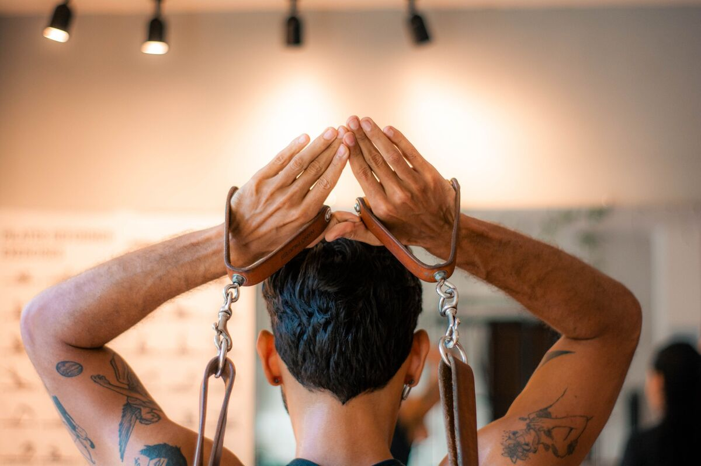
Praticamos o Pilates Clássico, o método como Joseph Pilates criou. Cada exercício tem um propósito, e a forma de praticar é adaptada ao seu corpo.
O que mais chama atenção de quem chega é a condução. Em todos os exercícios, você é guiado de perto. A instrutora fica ao seu lado do começo ao fim, mostra o caminho de cada movimento e corrige na hora.
É assim que você aprende a sentir o próprio corpo.
E leva para fora do estúdio mais consciência corporal, força e liberdade de movimento.
Levei anos até encontrar novamente um lugar em que me sentisse segura para retomar. Foi no Angá que isso aconteceu.
Um caminho simples, pensado para você sentir o movimento antes de escolher como vai praticar.
A gente conversa sobre as suas necessidades, a sua rotina e o que você busca. A aula é guiada do início ao fim, no seu ritmo, e você sai sabendo o que o seu corpo precisa.
Anamnese, análise postural, cadeias musculares do tronco, testes de flexibilidade, mobilidade e estabilidade, diafragma e contração abdominal profunda. Você recebe um relatório com o planejamento das suas aulas.
As turmas têm até 3 pessoas, montadas com quem tem objetivos parecidos com os seus. Se você precisa de um trabalho mais direcionado, indicamos a aula individual.
De 3 a 6 meses depois, comparamos o antes e o depois e traçamos novas metas.
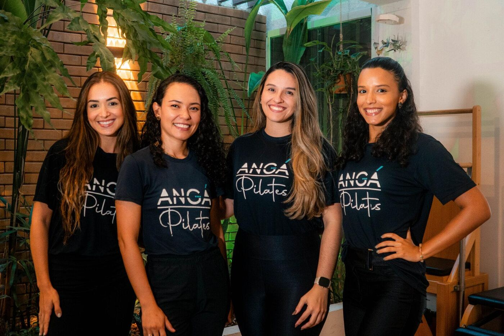
No Angá, todas as aulas são conduzidas por fisioterapeutas. A gente enxerga o seu movimento com olhar clínico, entende os seus limites e ajusta cada exercício com segurança e propósito.
Cada uma tem seu jeito de ensinar, e todas conduzem a aula com a mesma empatia e atenção ao seu corpo.
Luana Alves FernandesFundadora do Angá em 2017. Fisioterapeuta, osteopata e instrutora de Pilates Clássico, com 11 anos de experiência.
Luz natural, plantas e todos os equipamentos do método, num ambiente pensado para você se sentir à vontade desde o primeiro dia.
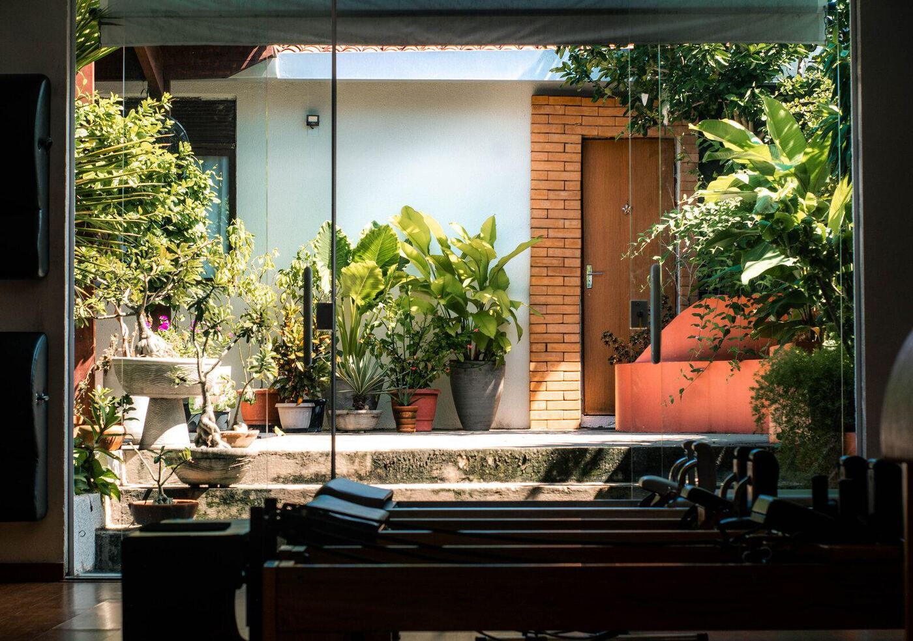
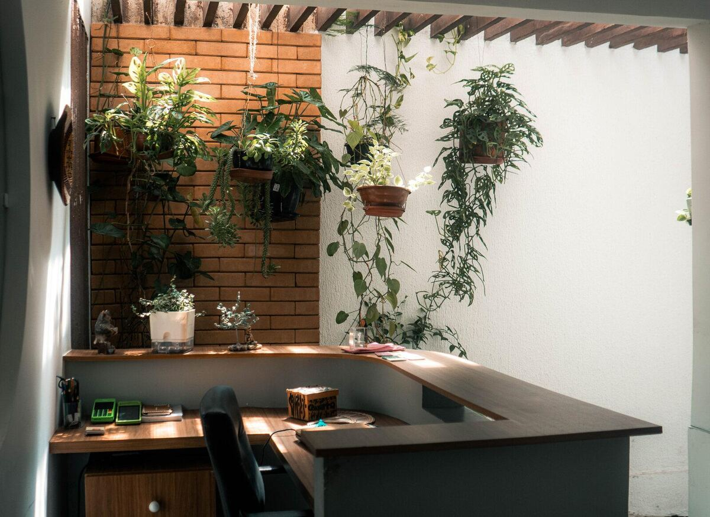
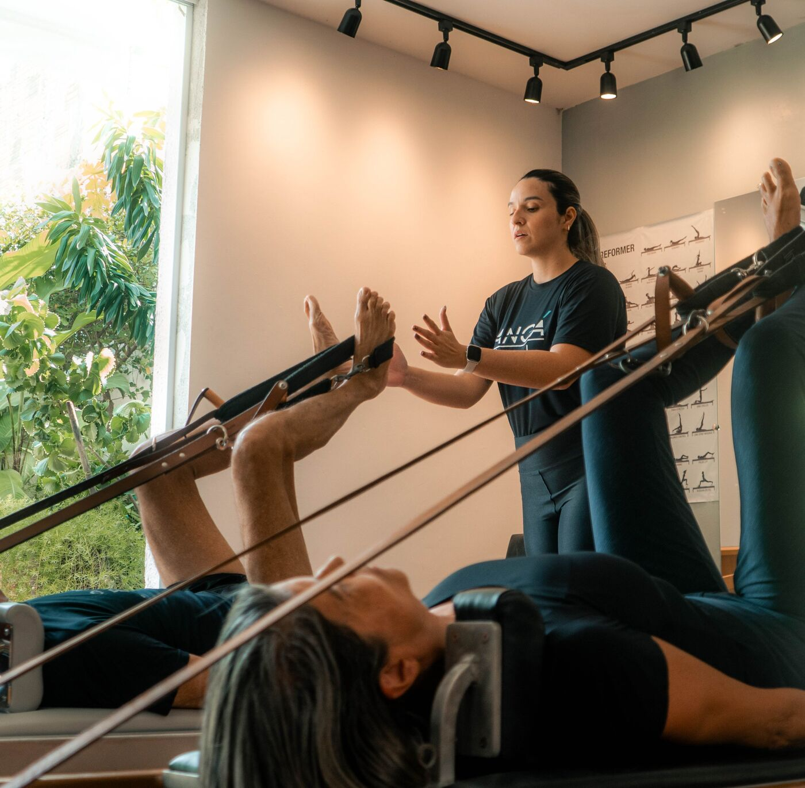
Um pouco das aulas, do espaço e de quem pratica com a gente.
5,0no Google, com avaliações escritas pelos nossos alunos.
Ver as avaliações no GoogleNa primeira aula a gente te ajuda a entender qual faz mais sentido para o seu momento.
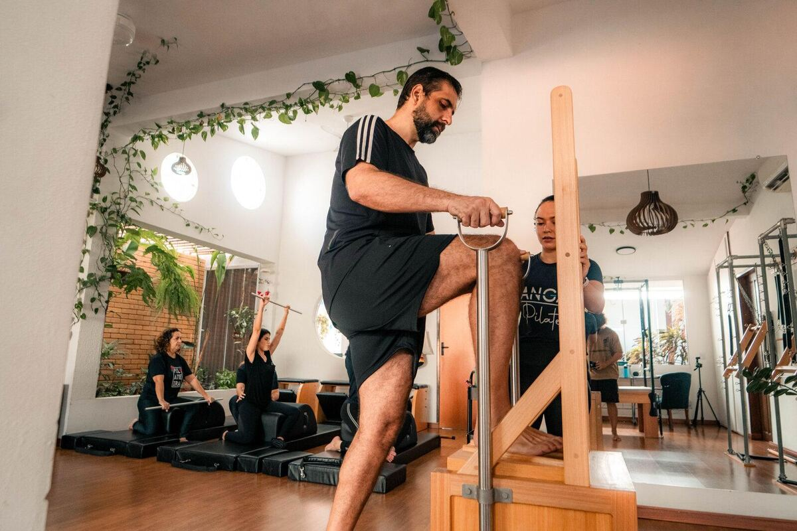
Turma de até 3 ou individualEm turmas de até 3 pessoas ou em aulas individuais, usando todos os aparelhos do método.
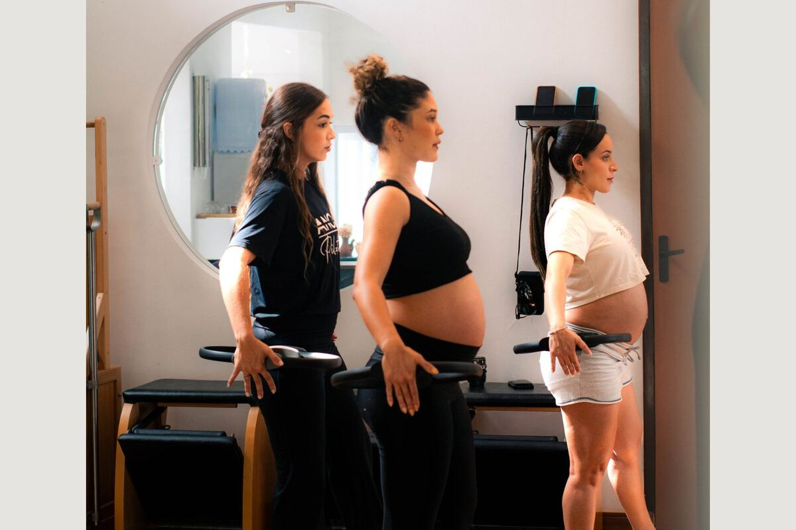
Até 3 alunasExercícios adaptados a cada fase da gravidez, para cuidar da postura, da respiração e dos desconfortos do período. Começa a partir da liberação do seu médico.
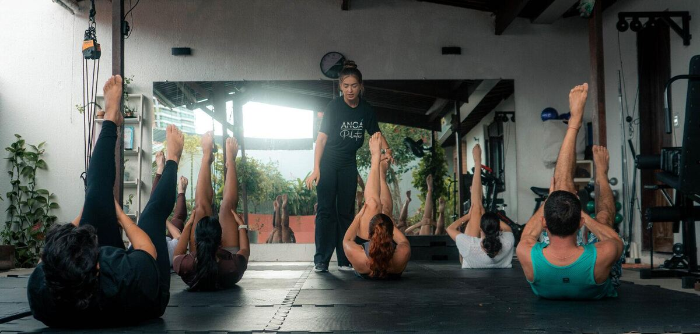
Até 6 pessoasA prática de solo do método. É completa, mais exigente do que parece, e uma porta de entrada com investimento menor.
Você começa pela primeira aula individual e decide o plano depois, já sabendo o que o seu corpo precisa.
1 aulaPrimeira aula individual
Para conhecer o método e a gente. Uma aula guiada do início ao fim, focada no seu corpo e no que você busca hoje.
Quero agendar a minha primeira aula1 mêsPlano mensal
Para começar a praticar com acompanhamento próximo e sentir, aula a aula, o corpo respondendo.
Quero saber sobre o plano mensal3 mesesPlano trimestral
Para criar constância. Tempo para a prática virar rotina e você perceber a sua evolução de perto.
Quero saber sobre o plano trimestral6 mesesPlano semestral
Para quem quer resultado consistente. Seis meses de prática guiada, com tempo para ganhar força, mobilidade e consciência corporal.
Quero saber sobre o plano semestralIndico para todos que estão procurando uma forma de cuidar do corpo e estão procrastinando.
Os valores mudam conforme a modalidade, o plano e a frequência que você escolher. Por isso a gente passa tudo pelo WhatsApp, de forma clara, junto com dois horários disponíveis para a sua primeira aula.
Você só escolhe o plano depois de fazer a aula e conversar com a gente. Sem pressão.
Ficou outra dúvida? Pergunte no WhatsApp, a gente responde.
Sim. A primeira aula e a avaliação existem para isso: você começa do zero, com tudo explicado e no seu ritmo.
Na maioria dos casos, sim, e ter uma fisioterapeuta ao lado faz diferença. Na avaliação entendemos o seu caso e, se for preciso uma liberação médica antes, a gente te orienta.
A partir da liberação médica, geralmente com 12 semanas. Se o seu médico indicar antes, recebemos antes.
Sim. Para essa fase, costumamos indicar aulas individuais, com atenção total ao seu ritmo e às suas necessidades. Na primeira aula a gente avalia o melhor caminho.
Você pratica o método original, com exercícios que trabalham o corpo inteiro de forma integrada. E a condução é próxima: a instrutora fica ao seu lado, guiando cada movimento.
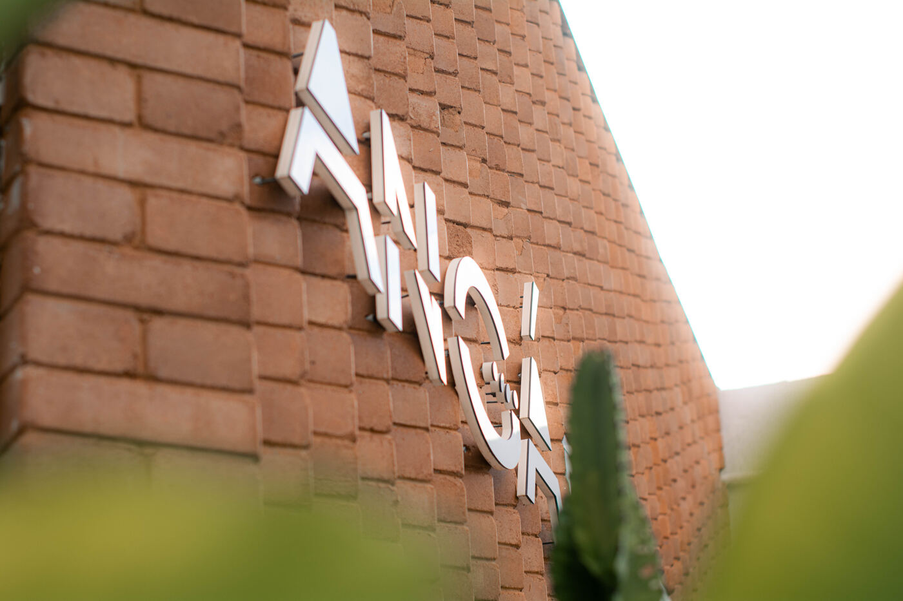